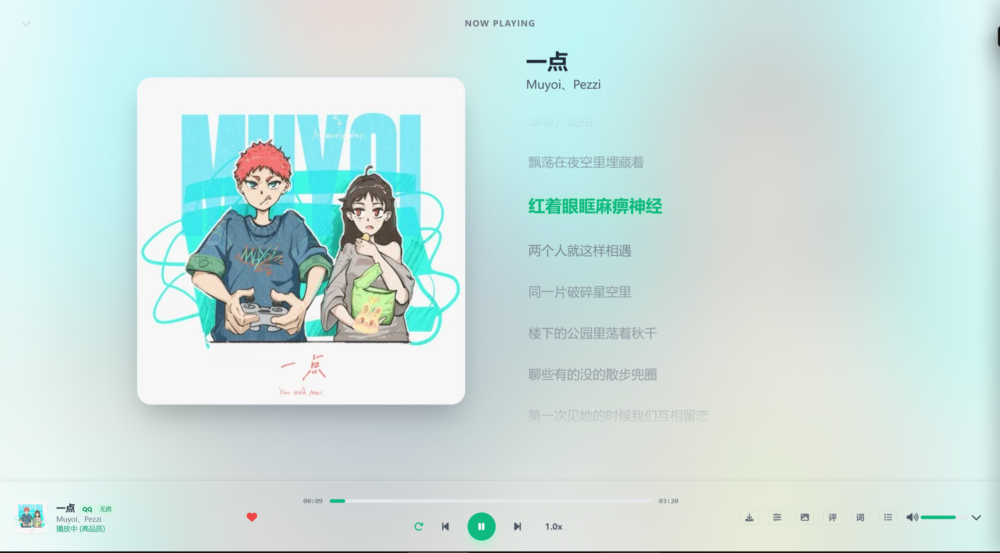
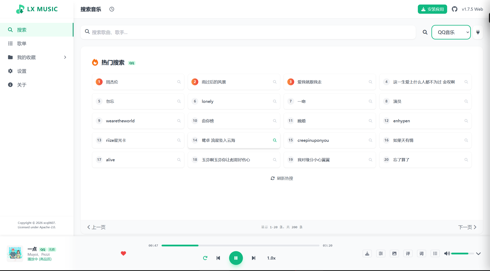
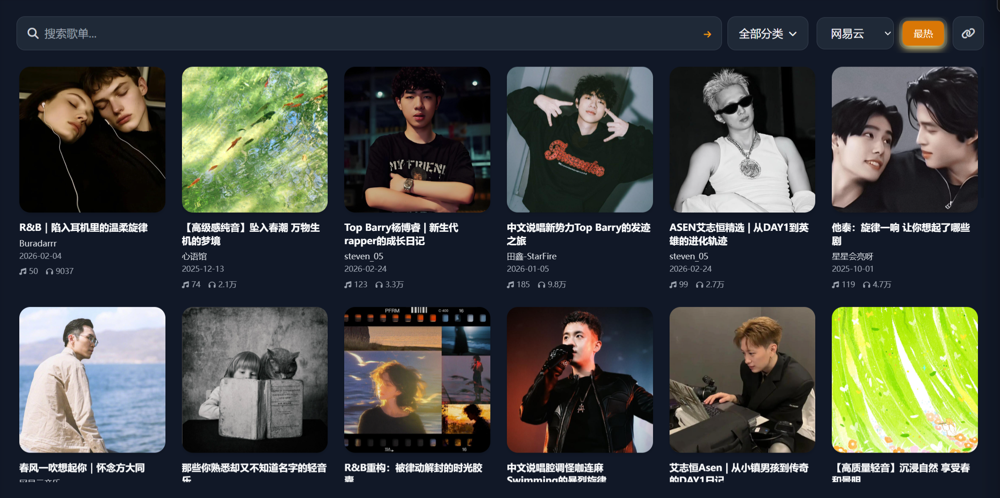
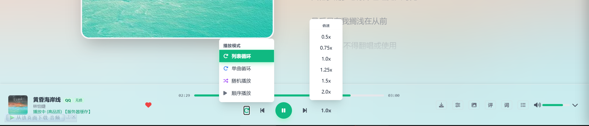
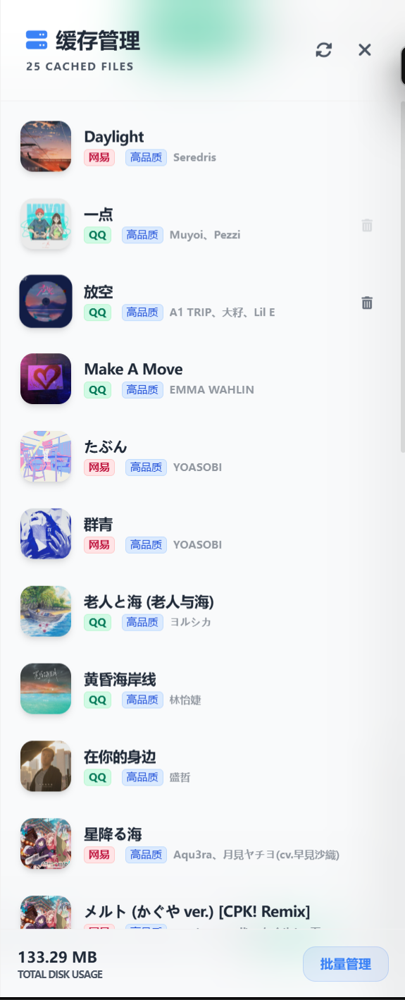
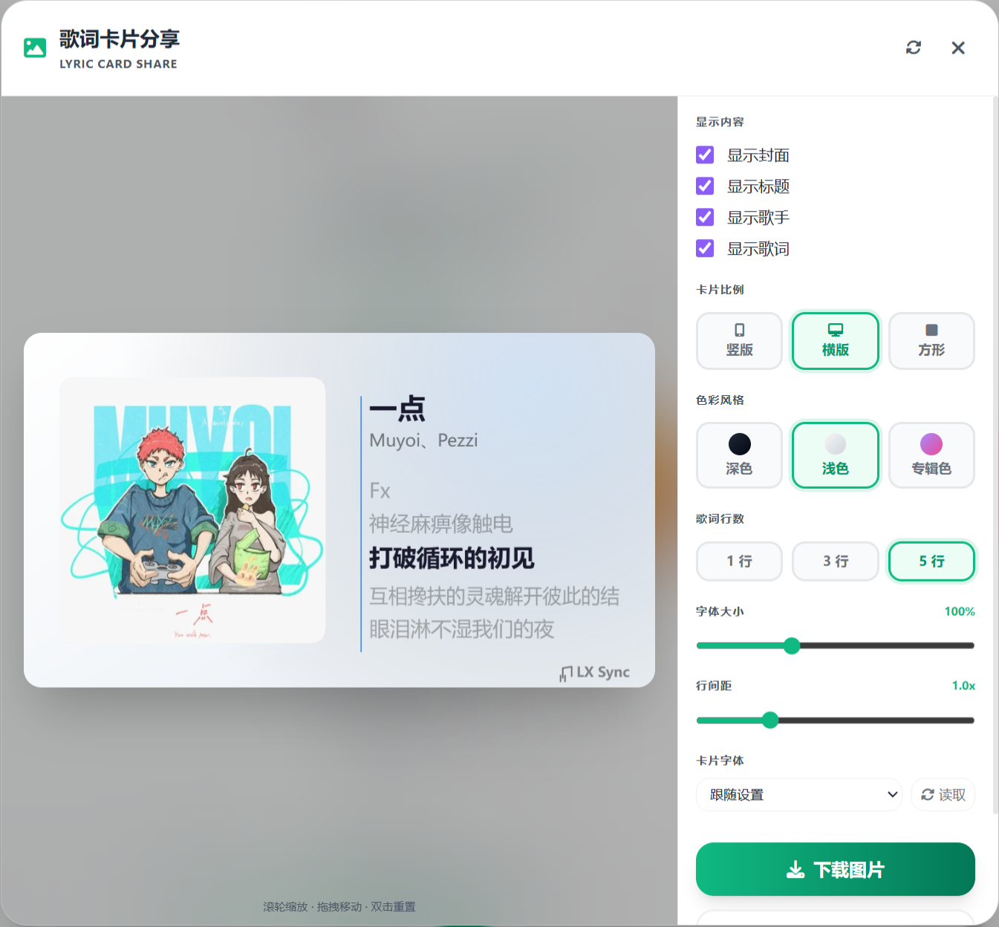
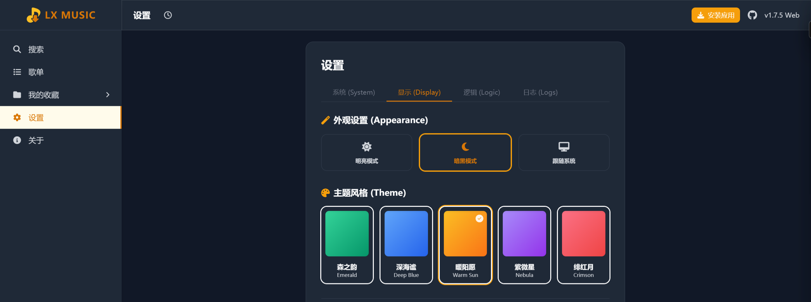

DLNA/AirPlay 投屏
一键推送当前播放至智能音箱、智能电视与 Apple 设备。支持局域网设备自动扫描、多设备切换与播放控制，客厅听歌更畅快。
现代化 Web 音乐播放器 · 聚合多源搜索 · HI-FI 无损音质 · 投屏分享
投屏、电台、本地库、智能刮削、VU 可视化——TT-Music 的特色能力一览
一键推送当前播放至智能音箱、智能电视与 Apple 设备。支持局域网设备自动扫描、多设备切换与播放控制，客厅听歌更畅快。

内置流媒体代理与电台管理，支持自定义电台源。每个电台可独立配置代理，突破 CORS 限制，打造专属广播电台列表。

扫描本地音乐文件，自动识别元数据、封面与歌词，构建个人音乐收藏。支持按专辑、歌手、年份多维度浏览与检索。

可视化管理已下载音乐，按专辑/歌手/年份分类浏览。支持元数据编辑、封面更换与文件路径治理，让收藏井井有条。

基于音频指纹的智能识别，通过 Acoustid 自动匹配歌曲元数据。即使文件名混乱或缺失标签，也能精准识别歌曲信息与封面。

经典 VU 表风格的可视化特效，模拟硬件电平表动效。多种颜色模式与频谱动画随心切换，让音乐“看得见”。
从搜索到播放，从缓存到分享，TT-Music 为你提供完整的 Web 音乐体验

清爽的现代化 UI 设计，支持深色模式与多套主题，提供极致的视觉体验。响应式布局适配桌面与移动端。

聚合各大音乐平台的资源，一键搜索全网音乐。想听什么搜什么，结果按相关度智能排序。

支持多平台歌单的浏览、搜索与一键播放，提供直观的歌单详情面板，包含封面、作者、简介等完整信息。播放队列支持拖拽排序。

支持播放模式切换、音质选择、歌词显示、睡眠定时、播放倍数等功能。HI-FI 无损音质尽享原声。

内置全自动化缓存系统，自动保存歌词、链接及歌曲文件。通过专门的缓存控制面板实现颗粒化管理，极大提升弱网环境下的播放流畅度。

支持自定义卡片比例（竖版/横版/方版）、色彩风格（深色/浅色/专辑色）及歌词行数，一键生成精美海报，支持旋转缩放。

内置多套现代化主题：森之韵、深海鲨、暖阳意、绯红月等，可根据系统自动切换暗亮模式，打造专属视觉风格。
支持导入自定义源脚本，扩展更多音乐来源。灵活配置代理与多维度网络设置，确保播放顺滑稳定。
除了核心播放功能，TT-Music 还集成了丰富的扩展能力
一键推送当前播放至智能音箱、智能电视、DLNA 设备，客厅听歌更畅快。
原生支持 Apple AirPlay 协议，iPhone/iPad/Mac 用户可无缝投屏播放。
内置流媒体代理与电台管理，支持自定义电台源，打造专属广播电台列表。
批量下载歌曲到本地音乐库，自动刮削元数据与封面，离线听歌无忧。
扫描本地音乐文件，自动识别元数据、封面、歌词，构建个人音乐收藏。
支持 FLAC/WAV/DSD 等无损格式，还原录音棚级音质体验。
多种颜色模式与频谱动画，让音乐"看得见"。主题色/自定义色/随机色/彩虹色随心切换。
睡前听歌好搭档，设定倒计时自动停止播放，伴你安心入眠。